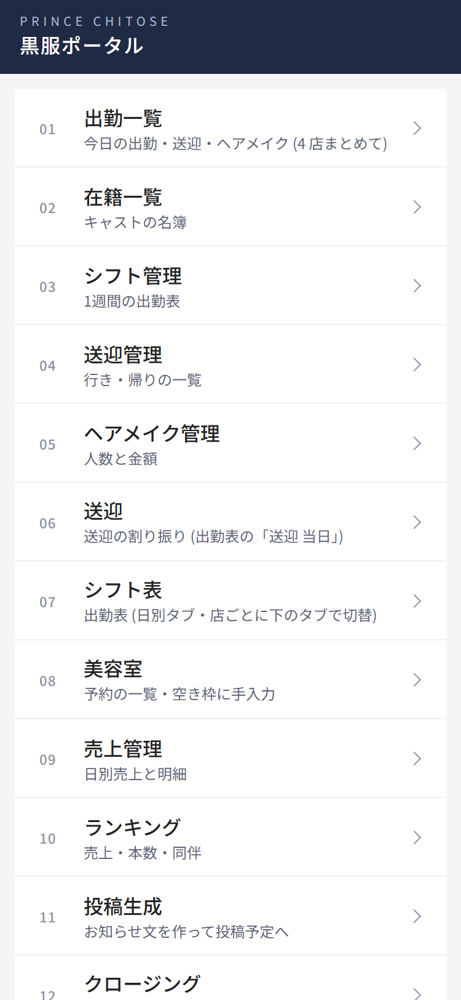

1 全体の仕組み
お店の データは Prince スプレッドシートに 集まります。人が 入れた ものも、女の子が 入れた ものも、ここに 入ります。
だれが 何を 入れて、どこに 出るか
| 入れる人 | 入れる所 | 出る所 |
|---|---|---|
| 応募する人 | 応募フォーム | 応募者一覧 (面接管理) |
| 黒服 | 面接・体入管理・クロージング | 在籍 (入店すると 入る) |
| レジの人 | レジ_一日体験 の 表 | 体験の子の 時刻・支給額 |
| 女の子 | マイページ (シフト・送迎・美容室) | 出勤表・送迎 当日・美容室の予約 |
| 美容師・ドライバー | シフト入力 (それぞれの ページ) | 美容室の予約表 ／ 送迎の ドライバー出勤 |
女の子の マイページ URL: 入店のとき 黒服が QR を見せる か、入店メール (面接アプリから 入った人) で 届きます。確認中 すでに 在籍している 約 160 人へ URL を 届ける 方法は、メールの 回収が 途中で、まだ 決まって いません。
2 仕事ごとの 手順
見出しを 押すと ひらきます。
1募集 → 面接
- 応募が 入ると、黒服ポータルの「面接管理」(応募者一覧) に 出ます。
- 面接に 来た子の「来店」を 押します。
- 質問を 上から 聞いて「次へ」(全部で 6 ページ)。途中で やめる時は「一時保存」。
- 6 ページ目で 結果 (当日体入 か 後日体入) を えらび「保存」→ 確認で「OK」。
- 「保存しました」と 出て、状態が「一日体験予定」なら 面接は 終わりです。
保存したあとは、画面から 取り消せません。まちがえたら 相談してください。
2体入 当日 → レジ入力
- 体験の子が 来たら、「体入管理」で その子の「来た」→ 確認で「OK」。
- レジの人は「レジ_一日体験」の 表で、その子の「入力する」を 押します。
- 出勤時刻・退勤時刻・支給額を 書きます (例: 20:00 / 23:00 / 9000)。
確認中 レジ表の「レジ担当」「メモ」「完了」を だれが 入れるかは、お店での 確認が 済んでいません。
3クロージング → 入店
- 体験の あと 本人と 話したら、ポータルの「クロージング」を 開きます。
- 「時給」を えらび、結果を 1 つ 押します: 入店 ／ 再体入 ／ 保留 ／ お断り。
- 「入店」なら 店番と 入店日を 見て「決定」→ 確認で「OK」。
- 「決定しました」が 出たら 入店 完了。その子が 在籍に 入ります。
1 回 押したら 待ってください (2 回 押さない)。
4入店のあと → 女の子へ マイページ
- ポータルの「在籍一覧」→ 店を えらぶ → その子の 名前の 右の「QR」。
- QR の 画面を 本人に 見せて、本人の スマホで 読み取って もらいます。
- 本人の マイページが 開きます。ここで シフト・送迎・美容室を 入れます。
面接アプリから 入った人には、入店メールで マイページの URL が 届きます。
5シフト・送迎・美容室・同伴
| だれ | 何を | どこで |
|---|---|---|
| 女の子 | 出勤の 日と 時間、送迎 (行き・帰り)、美容室の 予約 | マイページ |
| 美容師 | 出る日 (シフト入力)、来店の 記録 (対応した ／ 来なかった ／ キャンセル) | 美容室の ページ |
| ドライバー | 出られる日 (朝=行き ／ 帰) | 送迎 シフト入力 |
同伴・来店予定の日は、美容室の 予約で 優先に なります。入った データは 出勤表の 日別タブに 出ます。
6美容室の 給料引きと 明細
- シートの「美容室 給料引き(日別)」タブを 見ます。
- 日付・店・キャスト・金額 が 出ます。給料から 引くのは 有料で 対応した 分だけ です。
- 引いたら「引いた」に チェックを 入れます。
美容師さんの 明細 (PDF) は、毎朝 6 時台 (前の日分)・月曜 6 時台 (先週分) に、ドライブの「美容室 明細」に 自動で できます。メールは 送られません。中村本部長へ 自動で 届く 設定は 準備中 です。
3 営業中に 開く 出勤表
営業中は、出勤表スプレッドシートの 日別タブ (その日の タブ) を 開きます。
入口は 黒服ポータルの「シフト表」ボタンです。
日別タブの 見かた
- 上の「① → ④」の リンク: シフト入力 → 出勤簿 → 送迎 → 美容室 の 流れで 開けます。
- Q 列「送迎 割り振り」: 見るだけの 欄です。未定の子は 赤で 出ます。
- ヘアメイクの 時間 (F 列) を 押すと、その日の 美容室の 予約が 開きます。
出勤表の 中身は、10 分ごとに 自動で Prince スプレッドシートから 入ります。確認中 「Excel の 出勤から 拾う」流れは、いまの 仕組みでは まだ 確かめられて いません。
追加の 出勤 (手入力) 準備中
完成すると、表の 下の「＋ 追加出勤」に 手で 入れられます。いま 別の 担当が 作っている 途中です。操作の 細かい 手順は できあがってから書きます。
指名の 入力 → 売上指名表 作業中
出勤簿の 右がわの 指名などの 入力を、これから 自動で Excel の 売上指名表に 反映する ように 作っています (作業中)。できあがるまでは、今までどおりです。
4 黒服ポータルの ボタン

- 1 出勤一覧今日の 出勤・送迎・ヘアメイク (4 店まとめて・読むだけ)
- 2 送迎出勤表の「送迎 当日」(送迎の 割り振り) が 開く
- 3 シフト表出勤表 (日別タブ・店ごとに 下の タブで 切りかえ)
- 4 美容室予約の 一覧・空き枠に 手入力
5 準備中・作業中・確認中
| こと | いま |
|---|---|
| 追加出勤 (表の下に 手入力) | 準備中 別の 担当が 作成中 |
| 指名の 入力 → Excel 売上指名表へ 自動反映 | 作業中 |
| スプレッドシート → Excel への 書き込み | 準備中 1 店ずつ (花もみじから) 練習中。本番の 書き込みは まだ 解禁されて いない |
| Excel の 出勤から 出勤表へ 自動で 拾う | 確認中 |
| 美容室の 明細を 中村本部長へ 自動メール | 準備中 (ドライブに できる ところまで) |
| 送迎の 週払い 明細 (月曜に 中村本部長へ) | 作成中 送り先 未設定で 停止中 |
| 送迎の 自動割り振りと LINE WORKS 連絡 | テスト中。本番は 2027 年から |
| いる 女の子 (約 160 人) への マイページ URL 配布 | 確認中 開始時期は これから 決める |